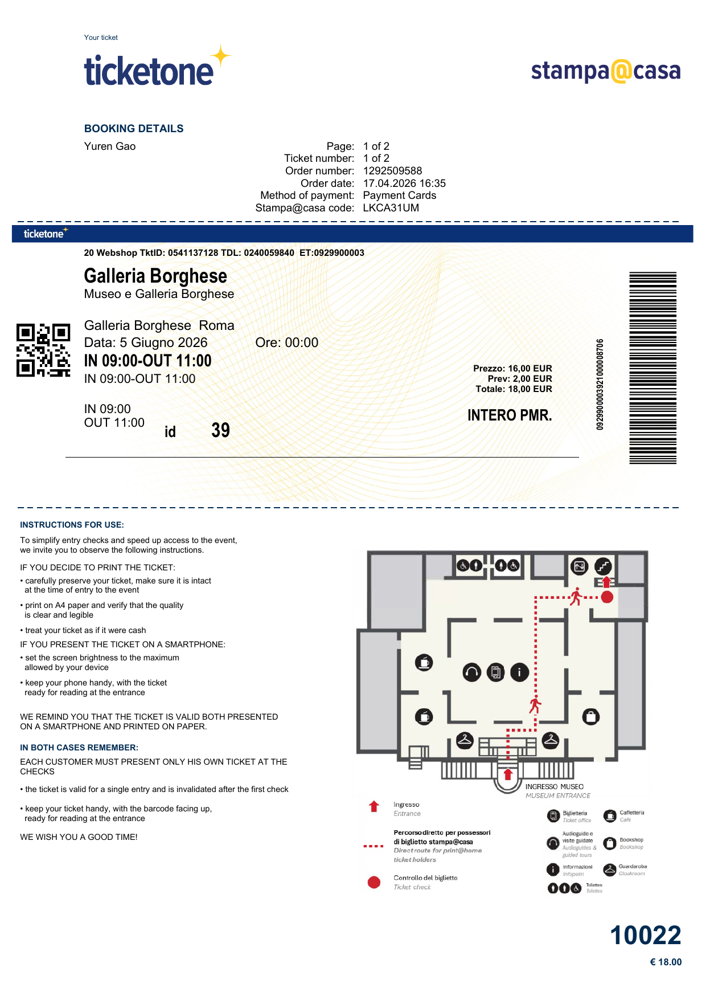
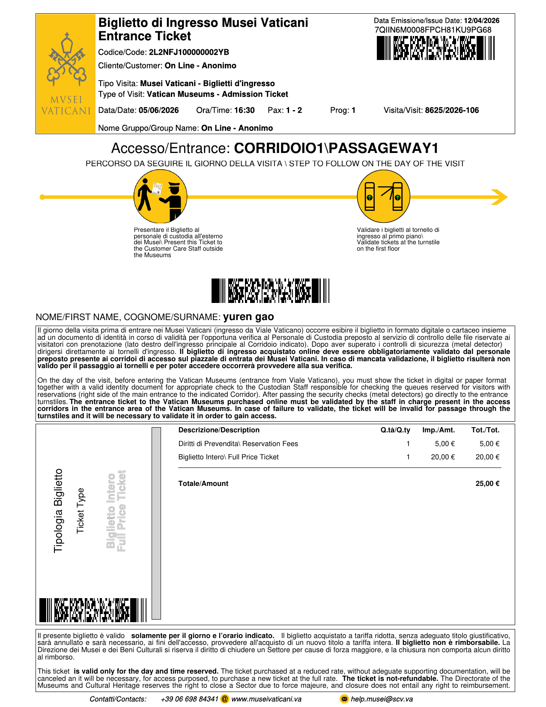

博尔盖塞博物馆 + 梵蒂冈 + 古罗马经典
酒店 → 博尔盖塞博物馆 → 午餐 → 梵蒂冈博物馆 → 圣彼得大教堂 → 圣天使堡 → 酒店
住宿：Best Western Plus Hotel Universo（同上）
订单号：1292509588 | 价格：€18 (含€2预约费)
入场ID：39 | 限时：2小时

参观编号：8625/2026-106 | 价格：€25 (含€5预约费)
指定入口：CORRIDOIO1 / PASSAGEWAY 1

08:00 🍽️ 酒店早餐
09:00 🎨 博尔盖塞博物馆 (Galleria Borghese) 【预约已确认 09:00入场】
【亮点】世界顶级的艺术博物馆，收藏有大量贝尼尼雕塑杰作和卡拉瓦乔画作。《阿波罗与达芙妮》和《普鲁托与普洛塞尔皮娜》是镇馆之宝。
📱 预约攻略：必须提前网上预订！每天限流，每次参观限时2小时。建议提前2-4周预订。官网：galleriaborghese.beniculturali.it
🚇 交通方式：地铁A线Spagna站，步行约15分钟穿过Villa Borghese公园。
💡 小贴士：必看作品：《阿波罗与达芙妮》《普鲁托与普洛塞尔皮娜》《大卫》（贝尼尼）、卡拉瓦乔《捧果篮的男孩》。
12:30 🍝 午餐
【推荐】博物馆附近或西班牙阶梯区域
💡 小贴士：罗马特色意面：Carbonara（培根蛋面）和 Cacio e Pepe（奶酪胡椒面）。
14:00 ⛪ 圣彼得大教堂 (Basilica di San Pietro)
【亮点】世界最大的教堂，文艺复兴建筑的巅峰之作。米开朗基罗设计的穹顶和圣彼得广场是建筑史上的杰作。
🚇 交通方式：从梵蒂冈博物馆出口步行约15分钟，或地铁A线Ottaviano站。
💡 小贴士：必看：米开朗基罗《圣殇》（Pieta）、青铜华盖、圣彼得宝座。登顶需爬551级台阶，可俯瞰梵蒂冈全景。
16:30 🏛️ 梵蒂冈博物馆 (Musei Vaticani) 【预约已确认 16:30入场】
【亮点】世界上最大的博物馆之一，拥有70000多件藏品。西斯廷礼拜堂的米开朗基罗《创世纪》天顶画是西方艺术史上最伟大的杰作之一。
🚇 交通方式：地铁A线Ottaviano站，步行10分钟。
💡 小贴士：必看：西斯廷礼拜堂（《创世纪》《最后的审判》）、拉斐尔画室（《雅典学院》）、地图廊、松果庭院。
⚠️ 重要提醒：门票指定入口为 CORRIDOIO1 / PASSAGEWAY 1，请提前30分钟到达！
19:30 🏰 圣天使堡 & 圣天使桥
【亮点】古罗马皇帝哈德良的陵墓，后改为城堡和监狱。圣天使桥上的十座天使雕像由贝尼尼设计，是罗马最美的桥梁。
🚇 交通方式：从圣彼得大教堂步行约15分钟。
💡 小贴士：日落时分景色最佳，桥上拍圣彼得大教堂背景绝佳。时间紧张可只外观拍照。
20:00 🍽️ 晚餐
【推荐】特拉斯提弗列区（Trastevere）传统餐厅
💡 小贴士：Trastevere区小巷众多，氛围浪漫，适合晚餐后漫步。
Best Western Plus Hotel Universo
📍 Via Principe Amedeo 5/B, 00185 Roma
🚇 距离 Termini 火车站步行5分钟